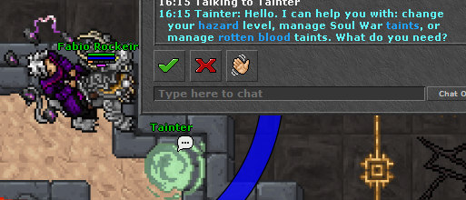

Aumento das Taints
Como o bônus de experiência, loot e a dificuldade sobem em Soul War, Sanguine (Rotten Blood), Hazard de Gnomprona e Void Hazard. O valor usado na caçada é o da tabela abaixo.

Soul War
São 5 taints, nesta ordem: Goshnar's Malice, Hatred, Spite, Cruelty e Greed. Cada boss libera a taint correspondente. O ciclo dura 14 dias a partir da primeira taint; depois disso elas são limpas. O NPC Tainter adiciona ou remove taints já desbloqueadas.
Experiência e loot geral usam o Goshnar's Tribute: a menor taint da party na zona. Vale nas criaturas das hunts da Soul War (Claustrophobic Inferno, Mirrored Nightmare, Ebb and Flow, Furious Crater e Rotten Wasteland) e nos bosses Goshnar.
Bônus por taint
| Taint | Experiência | Loot | Penalidade ativa na hunt |
|---|---|---|---|
| 1 | +4,5% | +4,5% | Sobe o tribute. Sem penalidade extra de dano. |
| 2 | +9,2% | +9% | Sobe o tribute. Sem penalidade extra de dano. |
| 3 | +14,1% | +13,5% | Monstros causam +12% de dano. |
| 4 | +19,2% | +18% | Mantém os +12% de dano. No golpe que mataria a criatura, há 10% de chance de ela se curar por completo. |
| 5 | +24,6% | +22,5% | Mantém as penalidades anteriores. A cada 10 segundos, perde 10% da vida atual e 10% da mana atual. |
O loot sobe a chance dos itens dessas criaturas em +4,5% por taint (multiplicativo). Itens com chance muito baixa, abaixo de 0,08%, não entram nesse bônus. A experiência é o valor da tabela, aplicado em cima da exp da criatura.
Sanguine (Rotten Blood)
Quatro taints normais, uma por boss, sempre no próximo espaço livre: Vemiath, Chagorz, Murcion e Ichgahal. O ciclo das taints normais dura 68 horas a partir da primeira. Para entrar no Bakragore é preciso ter as 4. Ao derrotar o Bakragore, as 4 taints normais são limpas e o jogador recebe a Final Taint, que permanece. Para usar o bônus máximo de novo, é preciso refazer as 4 taints dentro de um novo ciclo de 68 horas, já com a Final Taint.
Experiência e loot valem nas criaturas das hunts sanguine (Jaded Roots, Putrefactory, Gloom Pillars e Darklight). A exp usa só as taints normais da party. O extra de loot da Final Taint é de quem está rolando o loot, e só entra se a party já estiver nas 4 taints.
Bônus por taint
| Taint | Experiência | Loot | Efeito na hunt |
|---|---|---|---|
| 1 — Brawling | +6% | +9% | Chance baixa de trocar de lugar com o monstro ao ser atingido (1 em 340). |
| 2 — Bloodjaw | +12% | +18% | Mantém a troca de lugar (1 em 330). Ao morrer, a criatura tem 6,25% (1 em 16) de nascer um Bloodjaw. |
| 3 — Root | +18% | +27% | Troca de lugar fica 1 em 320. Passam a valer as magias de root, dano elemental e poças de agony da área. |
| 4 — Vulnerability | +24% | +36% | Troca de lugar fica 1 em 310. Monstros causam +20% de dano. |
| 4 + Final Taint | +24% | +44% | A exp não sobe além dos 24%. O loot ganha +8% extras. O dano recebido vai para +25%. A troca de lugar fica 1 em 300. |
O loot é multiplicativo sobre a chance do item (+9% por taint normal, teto de 44% com a Final). A Final Taint sozinha, sem as 4 taints normais, não dá bônus de exp nem de loot.
Hazard (Gnomprona)
O hazard vai do nível 1 ao 18. O nível atual pode ser baixado no Tainter, até o máximo já desbloqueado. Para subir o máximo, é preciso matar The Primal Menace com o hazard da luta igual ao seu máximo atual. A sala do Magma Bubble não entra no hazard.
Cada nível soma os valores abaixo. Dano, crítico e esquiva usam o menor hazard da party inteira. Experiência e o roll extra de loot usam o hazard de quem ganhou a exp ou é dono do corpo.
Por nível
| Efeito | A cada nível | Nível 1 | Nível 12 | Nível 18 |
|---|---|---|---|---|
| Experiência | +3,5% | +3,5% | +42% | +63% |
| Dano recebido | +2% | +2% | +24% | +36% |
| Crítico do monstro | 7,5% de chance, no máximo 1 a cada 2s. O golpe crítico causa cerca de +50% e sobe +0,25% por nível acima do 1. O +2% de dano por nível também entra nesse golpe. | +50% | +52,75% | +54,25% |
| Esquiva do monstro | +0,85% de anular o seu golpe | 0,85% | 10,2% | 15,3% |
| Roll extra de loot | +4% de chance de um roll a mais | 4% | 48% | 72% |
| Primal Pod | +0,87% de chance na morte | 0,87% | 10,44% | 15,66% |
| Plunder Patriarch | Sobe até o nível 12 e para. Só é testado se o pod não nasceu. | 1 em 32.000 | 1 em 2.667 | 1 em 2.667 |
Para achar o seu nível: experiência = nível × 3,5%; dano recebido = nível × 2%; esquiva = nível × 0,85%; chance de um roll extra = nível × 4%; chance de pod = nível × 0,87%. Do nível 13 ao 18 o Plunder continua com a mesma chance do nível 12.
O pod explode se for pisado entre 2 e 4 segundos: 5% da vida máxima, aumentada pelo hazard, mais 500 de dano. Aos 4 segundos, se ninguém pisou, nasce um Fungosaurus. Boss de recompensa não gera pod nem Plunder.
Void Hazard
São 4 taints, ganhas uma a uma ao matar o Zy'Thar: Depth, Pressure, Corrosion e Void. Não expiram. O Void Warden deixa baixar o nível ativo, de 0 até o que já foi desbloqueado. Nível 0 desliga bônus e penalidade. O nível ativo é o que conta, não só o desbloqueado.
Vale nas criaturas Void (Void Brute Corrupted, Void Demon Ravager, Void Riftcaster) e Netherbound (Netherbound Brain, Netherbound Demon, Netherbound Dragon). Experiência e loot usam a menor taint ativa da party dentro da área. O dano extra é o da taint de quem está apanhando.
Bônus por taint
| Taint | Nome | Experiência | Loot | Dano dos monstros |
|---|---|---|---|---|
| 1 | Depth | +5% | +5% | +4% |
| 2 | Pressure | +10% | +10% | +8% |
| 3 | Corrosion | +15% | +15% | +12% |
| 4 | Void | +20% | +20% | +16% |
O loot soma +5% por taint na chance dos itens dessas criaturas, até +20%. Itens com chance abaixo de 0,08% não entram nesse aumento.
Quem define o número da kill
| Sistema | Experiência e loot | Dificuldade |
|---|---|---|
| Soul War | Menor taint da party na hunt, até 15 sqm do líder. | Penalidade é de quem tem a taint e está na zona. |
| Sanguine | Menor taint normal da party. O +8% de loot da Final Taint é individual e só com a party já nas 4. | Dano extra, Bloodjaw, root e troca de lugar são da taint de quem está na hunt. |
| Hazard | Hazard de quem recebe a exp e de quem é dono do corpo. | Dano, crítico, esquiva, pod e Plunder usam o menor hazard do grupo. |
| Void Hazard | Menor taint ativa da party dentro da Void Zone. | +4% de dano por taint ativa de quem está apanhando. |